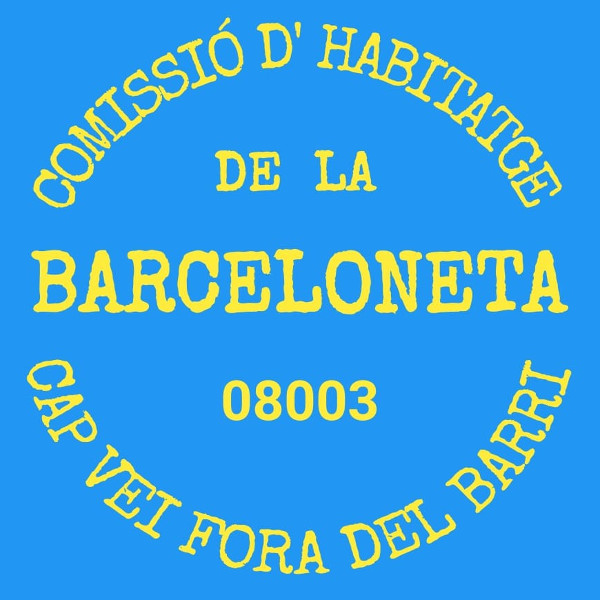

La Comissió d'Habitatge de la Barceloneta és un espai d'organització veïnal per a la defensa del dret a l'habitatge
al barri. Està constituït i liderat per veïns i veïnes, y vinculat al Pla Comunitari. Entre altres accions,
convoca mensualment l'Assemblea d'Habitatge de la Barceloneta (últim dimecres de cada mes, a les 18h). Es tracta
d'un espai completament obert a la participació de totes aquelles persones i entitats de la Barceloneta que comparteixin
els seus objectius i dinàmiques de treball comú, els quals estan recollits al document Ideari i principis bàsics de la
Comissió d'Habitatge de la Barceloneta, consensuat a la Comissió el 2018.
En reproduïm un extracte a continuació:
Què defensem?
La Comissió d’Habitatge de la Barceloneta, en consonància amb col·lectius que s’han anat articulant a nivell de barris i
de tota Barcelona, defensem un canvi en el model de ciutat, insistint a la necessitat urgent, per al nostre barri i per
a la ciutat en el seu conjunt, de reduir el volum del turisme actual, així com de desenvolupar polítiques i mesures des
de l’Administració pública per donar resposta a l’emergència habitacional i també per trencar d’arrel, o al menys
limitar contundentment, les dinàmiques especulatives culpables de la dificultat en l’accés i manteniment de l’habitatge.
Considerem el dret a un habitatge digne com un dret humà fonamental. No tolerarem cap
desnonament sense alternativa habitacional. Ens comprometem amb els veïns en situació de
risc de pèrdua de l’habitatge, i acompanyem els afectats, en el marc de l’Assemblea. Intervenim
per aturar els llançaments, excepte en casos de petits propietaris.
Insistim en la responsabilitat pública de garantir aquest dret: totes les Administracions
i institucions públiques, en funció de les seves atribucions i competències, han d’impulsar
mesures per donar resposta a l’emergència habitacional, i també per penalitzar i perseguir
l’especulació. És evident que necessitem un increment urgent del parc públic d’habitatge de
lloguer, i de manera particular s’ha de cobrir la necessitat de pisos adaptats per a
la gent gran amb problemes de mobilitat, promovent el retorn a l’ús de vivenda de moltes
plantes baixes del barri que cada vegada més s’estan fent servir com a magatzem de bars i
restaurants. Reivindiquem un canvi en la Llei d’Arrendaments Urbans (LAU), en la línia de
garantir molt més els drets dels llogaters.
Pensem que és de vital importància que els veïns i les veïnes continuïn vivint al barri,
i les mesures públiques han de recollir també aquest objectiu. Sobre tot en el cas de la gent
gran amb problemes de mobilitat, quan tenen la possibilitat d’accedir a un habitatge amb serveis
per gent gran, habitualment han de marxar fora del barri. La xarxa de suport i solidaritat
veïnal pot arribar a ser un element que garanteix la supervivència, per a aquestes persones. En
tot cas, la supervivència del barri com a tal, amb la seva identitat i vida comunitària, ha
de ser un objectiu a perseguir.
Creiem en l’organització veïnal com a motor d’una transformació i un canvi de model. Per
això promovem l’Assemblea, espai de solidaritat veïnal que permet la conscienciació i
l’organització dels veïns i les veïnes de La Barceloneta, amb l’objectiu de sumar forces a
l’exigència social d’aquests canvis necessaris.
Busquem fer xarxa amb altres col·lectius, per enfortir la nostra lluita, i també
col·laborem amb els serveis públics, per facilitar la seva tasca de donar resposta a
l’emergència habitacional, així com per a l’aplicació i la implementació de les mesures que
s’estan impulsant per intentar garantir el dret a l’habitatge.
Defensem la funció social de l’habitatge, que ha de ser un lloc per viure-hi, radicalment en
contra de la visió de l’habitatge com una mercaderia per obtenir un lucre. No volem cap pis
turístic al barri.
Apostem pel decreixement del turisme. Per tant, ens oposem a qualsevol tipus d’iniciativa
que estigui, directa o indirectament, orientada a la promoció del turisme, o que pugui
beneficiar als agents que s’estan lucrant amb la turistització del barri (i la ciutat).
Funcionem com assemblea: l’estructura de la Comissió és absolutament horitzontal i democràtica. Totes les decisions es prenen per consens.
És un espai obert: Totes les associacions i veïns que ho vulguin, s’hi poden incorporar, sempre que s’identifiquin plenament amb els principis bàsics que orienten la nostra acció, i acceptin la dinàmica de funcionament pròpia de la Comissió. Apostem pel pluralisme i la diversitat com a elements que aporten valor als processos i moviments socials, dins d’una orientació bàsicament compartida. Les iniciatives o visions que siguin contràries a punts bàsics de la nostra lluita i la nostra tasca com a Comissió, seran excloses de la mateixa, per tal de preservar la coherència i la força d’allò que fem.
Defensem, i practiquem, la transparència: fem pública la informació que disposem, i les accions i iniciatives engegades per part de la Comissió.
Tots els membres de la Comissió ens comprometem en tasques i funcions concretes. Si un veí o representant d’una entitat no té una mínima disponibilitat de temps per poder assumir-ne algunes, no es podrà incorporar com a membre de la Comissió.